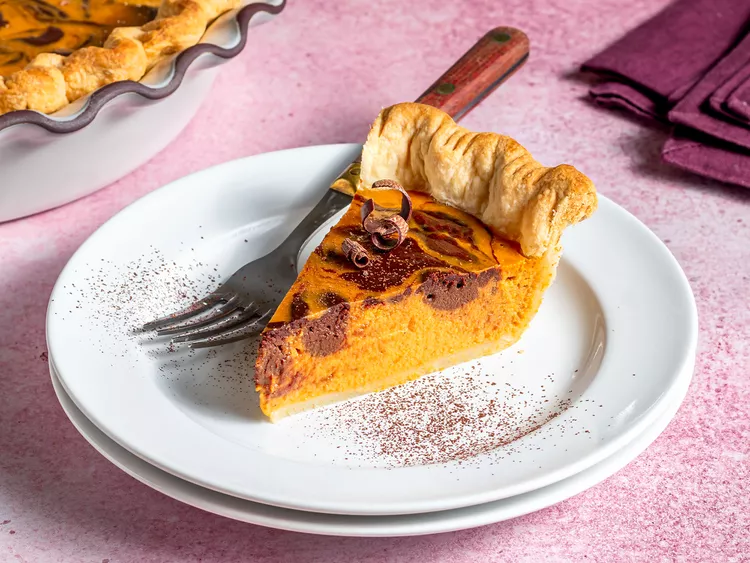

Pumpkin Pie

Description
Pumpkin pie rules the Thanksgiving dessert table. Those warming spices! That creamy pumpkin! That buttery crust! Plain pumpkin pie is clearly a classic for a reason, but it's also a great base for getting creative.
Ingredients
- Pie Crust
- Pumpkin Puree
- Sweetened Condensed Milk
- 2 Eggs
- Pumpkin Pie Spice
Steps
- Mix:Combine the pumpkin puree, condensed milk, eggs, and pumpkin pie spice in a large bowl. Mix until smooth, then pour into the prepared pie crust.
- Bake:Bake in an oven preheated to 425 degrees F for about 15 minutes, then reduce the heat to 350 degrees F and continue baking until the filling is set.